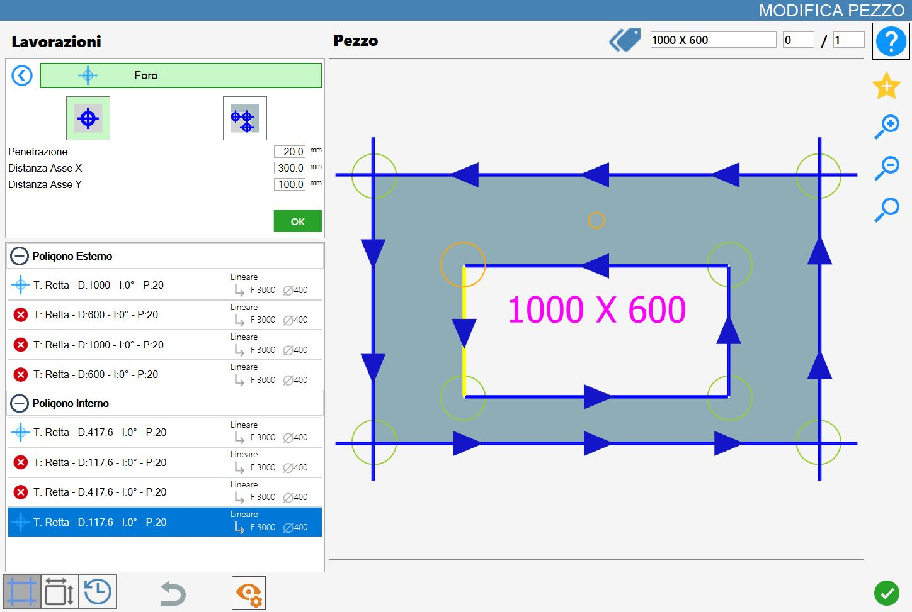
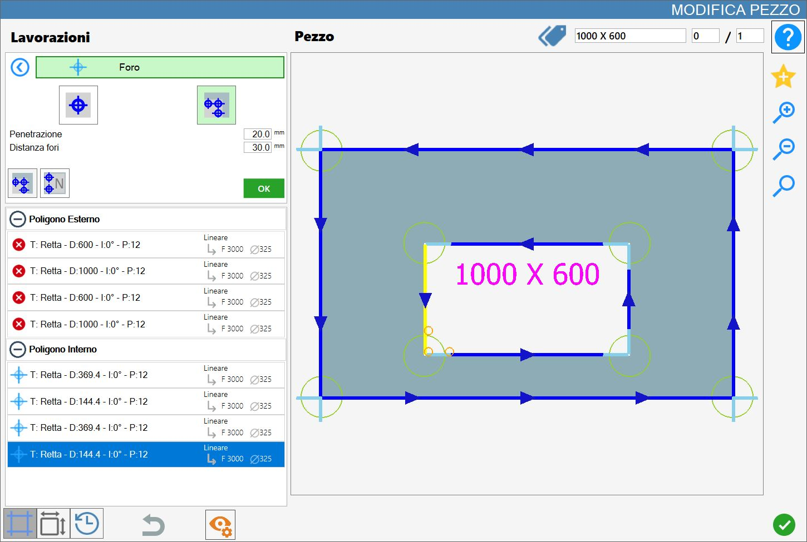

Nesta página é possível executar um único furo numa posição específica ou uma série de furos a uma distância definida.

Tipos de maquinação
Para utilizar esta maquinação, deve primeiro escolher um dos dois modos disponíveis, selecionando o botão correspondente:
Os modos 'Furo no material' e 'Remoção de resíduo do disco' são mutuamente exclusivos: a ativação de um desativa automaticamente o outro.
 | Furo no material |
 | Remoção de resíduo do disco |
Furo no material
Ao selecionar este modo de maquinação, o vértice atualmente selecionado será realçado a laranja e, a partir dele, será projetada a pré-visualização do furo a adicionar, também apresentada a laranja e gerada com base nos parâmetros definidos.

Parâmetros
Penetração | Indica a profundidade que a maquinação deve atingir. |
Distância do eixo X | Distância no eixo X a partir do ponto inicial do corte selecionado, na qual o furo será criado. |
Distância do eixo Y | Distância no eixo Y a partir do ponto inicial do corte selecionado, na qual o furo será criado. |
Relativamente ao ponto selecionado, considera-se positiva a parte à direita do círculo (para X) e a parte acima do círculo (para Y), conforme mostrado na figura.

Execução de Furo no material
É possível aplicar a maquinação premindo o botão à esquerda do corte adequado na lista de polígonos.
Um ícone vermelho com um 'X' indica que a maquinação não pode ser aplicada ao corte pretendido.
Depois de selecionar um vértice e definir os parâmetros de distância e penetração , é possível confirmar a maquinação premindo o botão verde OK.
A cada furo introduzido com sucesso no material corresponde a atualização da pré-visualização e a inserção automática na secção 'Maquinações adicionais' à esquerda:

Ao contrário da Remoção de resíduo do disco, também é possível selecionar os pontos centrais dos arcos, realçados na pré-visualização juntamente com todos os outros pontos válidos como referência para a inserção dos furos no material.
Remoção de resíduo do disco
Ao ativar este modo, o vértice selecionado torna-se o ponto de origem de uma pré-visualização laranja composta por vários furos, cujo tamanho depende da broca craniana montada e cuja quantidade é determinada pelo parâmetro Distância entre furos.

Parâmetros de Remoção de resíduo do disco
Penetração | Indica a profundidade que a maquinação deve atingir. |
Distância dos furos automáticos | Determina a distância entre os pontos de origem dos furos. |
Execução de Remoção de resíduo do disco
É possível aplicar a maquinação premindo o botão à esquerda do corte adequado na lista de polígonos.
Um ícone vermelho com um 'X' indica que a maquinação não pode ser aplicada ao corte pretendido.
O modo Remoção de resíduo do disco pode ser utilizado entre dois cortes consecutivos, independentemente de ambos serem linhas, ambos serem curvas, ou um de cada tipo.

O furo é adicionado à lista do polígono interior e identifica a maquinação de remoção do resíduo do disco.
Segue-se um exemplo de Remoção de resíduo do disco aplicada a dois lados adjacentes no polígono interior:

Botões disponíveis no modo Remoção de resíduo do disco
 | Furos côncavos |
|---|---|
 | Número de furos |